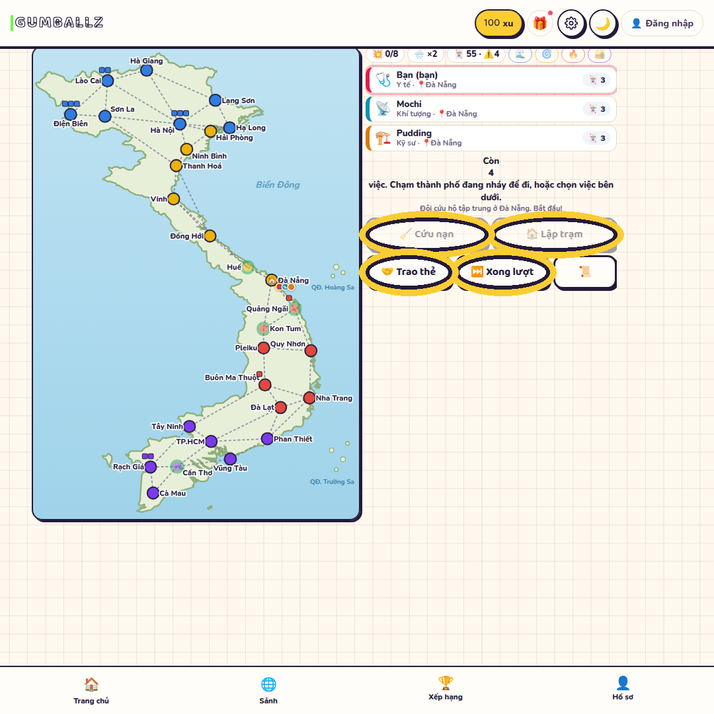

Chơi chung: cả bàn là một đội cứu hộ. Thắng khi khắc phục đủ 4 loại thiên tai: 🌊 Lũ quét (miền Bắc), 🌀 Bão (Bắc Trung Bộ), 🔥 Cháy rừng (Tây Nguyên – Nam Trung Bộ), 🏜️ Hạn mặn (miền Nam).
Thua khi: vỡ đê 8 lần · một loại thiên tai lan hết 24 điểm nguy · hết chồng thẻ cứu hộ.
Mỗi lượt làm 4 việc (chọn tuỳ ý, lặp lại cũng được)
- 🚶 Đi sang thành phố kề (có đường nối).
- ✈️ Bay: bỏ thẻ của nơi muốn tới. 🛩️ Thuê chuyến: bỏ thẻ của nơi đang đứng để tới bất kỳ đâu. 🏠 Đang ở trạm thì đi thẳng tới trạm khác.
- 🧹 Cứu nạn: bỏ 1 điểm nguy ở chỗ đang đứng (loại đã khắc phục thì dọn sạch luôn).
- 🏠 Lập trạm: bỏ thẻ của nơi đang đứng.
- 🤝 Trao thẻ: hai người đứng cùng chỗ trao nhau thẻ của chính thành phố đó.
- 💊 Khắc phục: đứng ở trạm, bỏ 4 thẻ cùng màu.
Hết 4 việc
- Bốc 2 thẻ cứu hộ. Gặp ⚠️ Siêu thiên tai: mức thiên tai tăng, một thành phố bị 3 điểm nguy, và các nơi vừa bị sẽ dễ bị lại.
- Rồi vài thành phố (số 🌧️) bị thêm 1 điểm nguy. Nơi đã có 3 mà bị thêm thì 💥 vỡ đê: lan sang mọi thành phố kề.
- Tay giữ tối đa 7 thẻ.
Vai trò
- 🩺 Y tế: Cứu nạn là dọn sạch mọi điểm nguy cùng loại ở thành phố đó. Loại đã khắc phục thì tự dọn khi đi tới.
- 🏗️ Kỹ sư: Lập trạm cứu hộ không cần thẻ.
- 📡 Khí tượng: Khắc phục một loại thiên tai chỉ cần 3 thẻ cùng màu thay vì 4.
- 📦 Hậu cần: Trao được BẤT KỲ thẻ thành phố nào cho đồng đội đứng cùng chỗ (không cần đúng thẻ thành phố đang đứng).
- 🪖 Bộ đội: Thành phố đang đứng và các thành phố kề bên không bị thêm điểm nguy (kể cả vỡ đê lan tới).
Thẻ đặc biệt ✨ (dùng lúc nào cũng được, không tốn việc)
- 🚁 Trực thăng: Đưa 1 người bất kỳ tới thành phố bất kỳ.
- ⛺ Trạm dã chiến: Lập 1 trạm cứu hộ ở thành phố bất kỳ, không cần thẻ.
- 🌤️ Trời yên biển lặng: Bỏ qua bước thiên tai ập tới của lượt này.
- 💰 Ngân sách khẩn: Bỏ hẳn 1 thẻ khỏi chồng thẻ thiên tai đã bốc (thành phố đó khó bị lại).